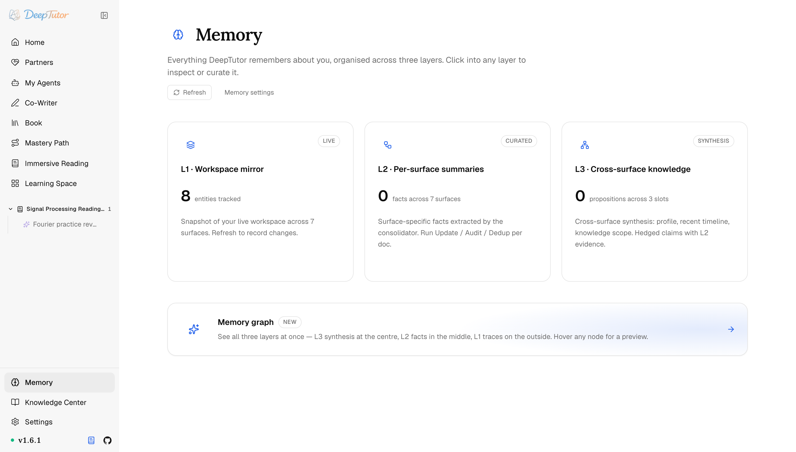
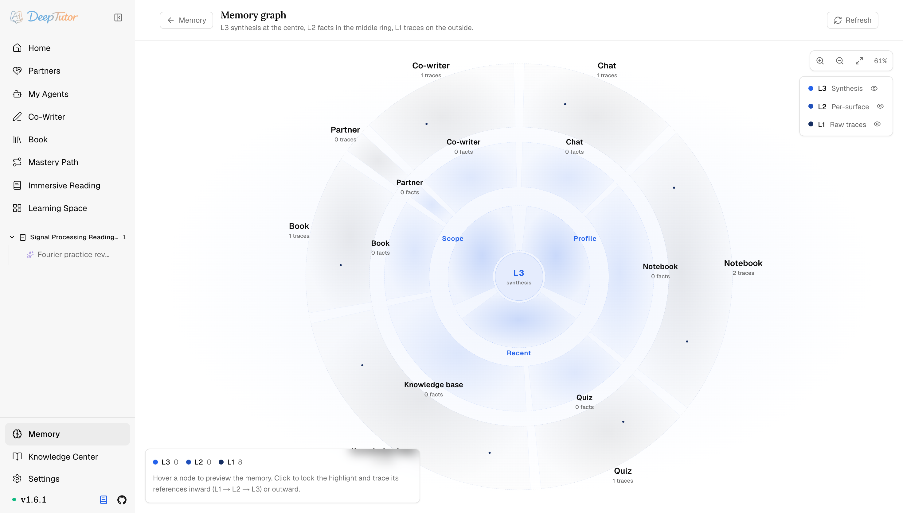
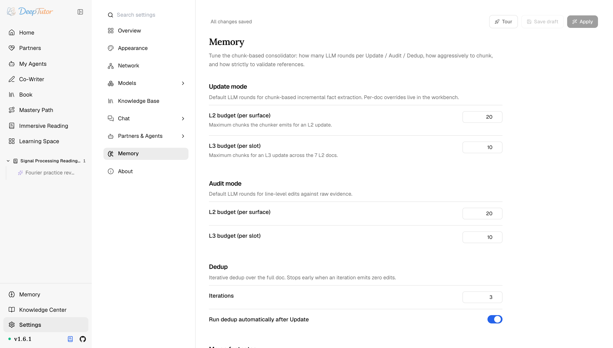

探索 DeepTutor記憶
AI 記憶不再是黑箱！DeepTutor 3 層記憶全透明，每條結論都能查到出處，這才叫放心！｜零度解說
可稽核的個人化——L1 工作區映像檔、L2 各介面摘要、L3 跨介面綜合，以及呈現各層引用關係的記憶圖譜。
原文連結：https://docs.deeptutor.info/zh-cn/explore/memory/
AI 嘴裡說的「我記得你偏好」，你敢信嗎？
最近我把 DeepTutor 的記憶（Memory）系統翻了個底朝天，結論是：它跟一般產品的「記憶」完全不是一回事。
它一共有 3 層：L1 工作區映像檔、L2 各介面摘要、L3 跨介面綜合，每一層都可讀、可整理，結論旁邊直接擺著它引用的工作區實體或來源介面，引用精度如實可見。
更狠的是，它刻意不是隱藏的向量庫，你隨時能開啟看它到底記了你什麼。
但話又說回來，看得見只是及格線，三層各自存什麼、怎麼聯動？接下來我們一層層拆開看。
記憶是什麼
記憶（Memory）是 DeepTutor 的可稽核個人化系統。
它是一條可讀、可整理、可稽核的三層管線，不搞隱藏式向量庫那一套。結論與它引用的工作區實體或來源介面並列，引用精度也如實可見。
它在哪裡
點選左側欄的 Memory（記憶）。
總覽一眼呈現三層，每層都有即時計數，並提供 Refresh（重新整理）、Memory settings（記憶設定），以及進入 Memory Graph（記憶圖譜）的入口。

三個層級，各管一段
記憶從工作區裡的即時實體逐級上升到綜合知識，每一層都是對持久內容的不同抽象。
| 層級 | 標籤 | 儲存 | 角色 |
|---|---|---|---|
| L1 · 工作區映像檔 | LIVE | 工作區 + snapshot/ |
各介面當前存在的實體。 Refresh 會存下 fingerprint、label、 last_refresh 與只追加的變更歷史。 |
| L2 · 各介面摘要 | CURATED | L2/ |
由整理器直接從即時 L1 實體抽取的、按介面歸類的事實，並引用其背後的實體。 |
| L3 · 跨介面綜合 | SYNTHESIS | L3/<profile | recent |
注意一個細節：記憶只在你實際使用的介面上追蹤：chat、notebook、quiz、kb、book、partner（夥伴）與 cowriter。
L2 可以引用一個具體的 L1 實體；當前 L3 引用通常只指向整個 L2 介面。偏好則跟隨那次明確的聊天寫入，因此引用仍可檢查，但粒度並不完全相同。
記憶圖譜：把三層攤開看
圖譜把三個自動綜合的 L3 槽位（profile、recent 與 scope）放在中心，L2 事實位於中環，即時 L1 實體位於外圈。
懸停可預覽，點選可鎖定並高亮現有連線；Preferences 不在圖中。

L2 到 L1 可指向具體實體。當前 L3 引用介面名，因此圖譜只畫到對應 L2 叢集的軟連線，而非精確的端對端鏈。
你可以先定位支撐領域，再檢查相關事實與實體，顆粒度細到離譜，追起出處來特別順手。
調校整理器
Settings → Memory 設定 Update / Audit 的 LLM 預算、Dedup 迭代、分塊與引用驗證，以及不呼叫 LLM 的腳註合併。改動儲存到 data/user/settings/main.yaml。

| 模式 | 作用 |
|---|---|
| Update | 增量事實抽取，設定 L2 與 L3 預算；逐文件覆蓋項在工作台裡。 |
| Audit | 對照來源實體或 L2 事實做行級修訂。 |
| Dedup | 對整篇文件迭代去重；當某輪迭代產出零修改時提前停止。 |
| Merge footnotes | 不呼叫 LLM：合併並重排重複引用；三個開關控制在 Update、Audit 或 Dedup 後自動執行。 |
CLI
deeptutor memory show L3
deeptutor memory show L2
deeptutor memory show profile
deeptutor memory show chat
deeptutor memory clear trace --force實踐建議
- 長週期的學習工作流就把記憶開著，那才是它發揮價值的時候。
- 當 DeepTutor 的語氣或假設不對勁時，去看 L3；對綜合槽位，圖譜會顯示當前可用的支撐介面與實體。
- 重新整理 L1 會記錄工作區發生了什麼變化；L2 Update 則直接讀取當前工作區快照。
- 多使用者模式下，每個使用者在自己的工作區下擁有受限的記憶；夥伴讀取自己的記憶與其擁有者的記憶，但只寫入自己的。
相關閱讀
實際效果還會受到使用時長、介面活躍度以及整理器參數設定的影響，建議大家結合自己的工作流實際體驗評估。